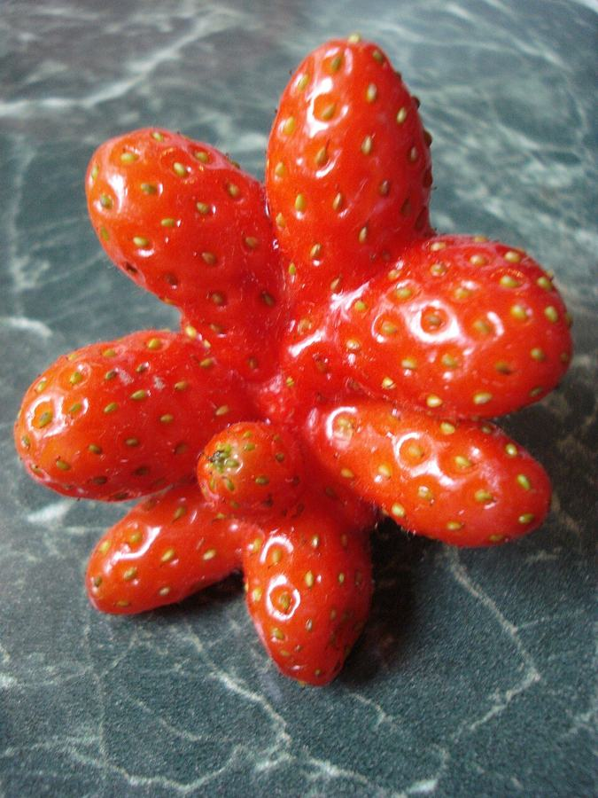
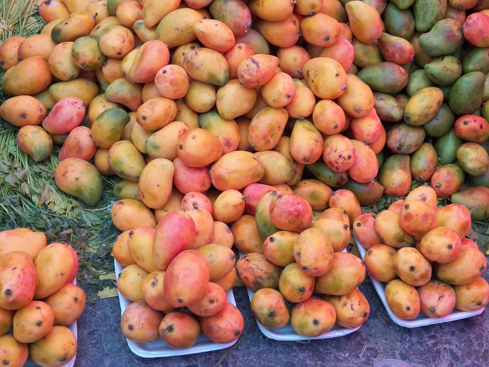
México, cada año
20.4 Mtoneladas tiradas
34 %de lo que se produce
$491 mil Mpesos perdidos
18.2 %sin comida suficiente
¿Por qué se tira?
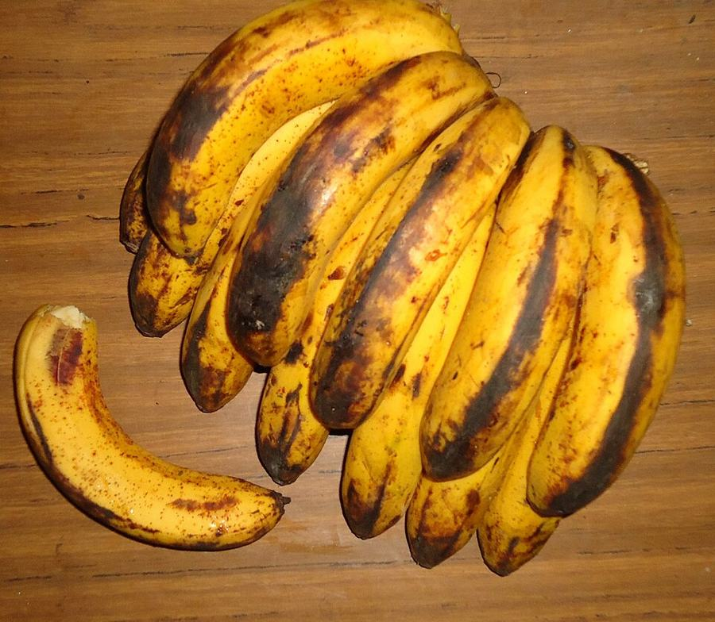
Maduró rápido
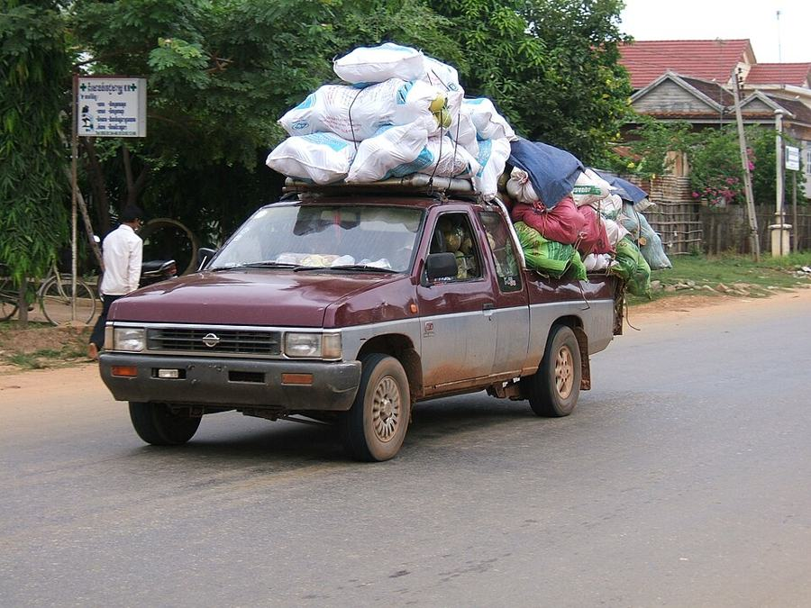
Sin transporte
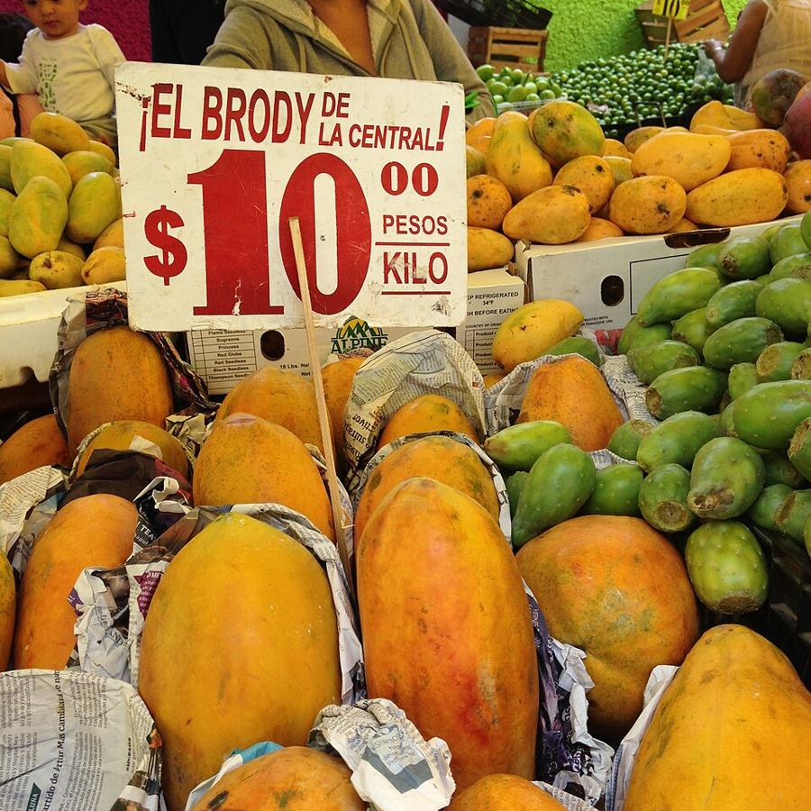
Precio injusto
Lo que rescatamos
-
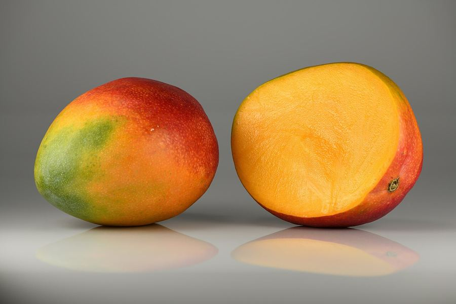
Mango -
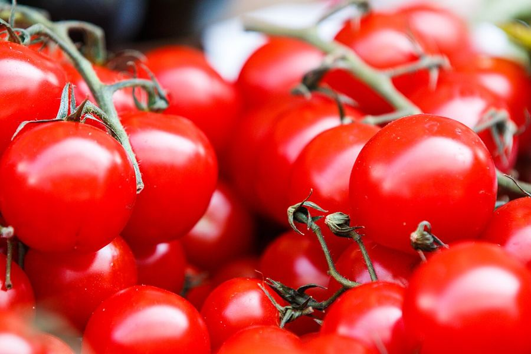
Jitomate -
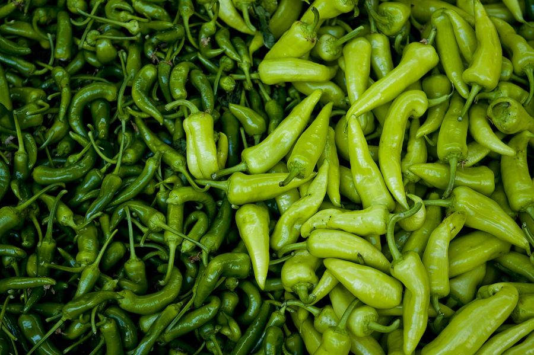
Chile -
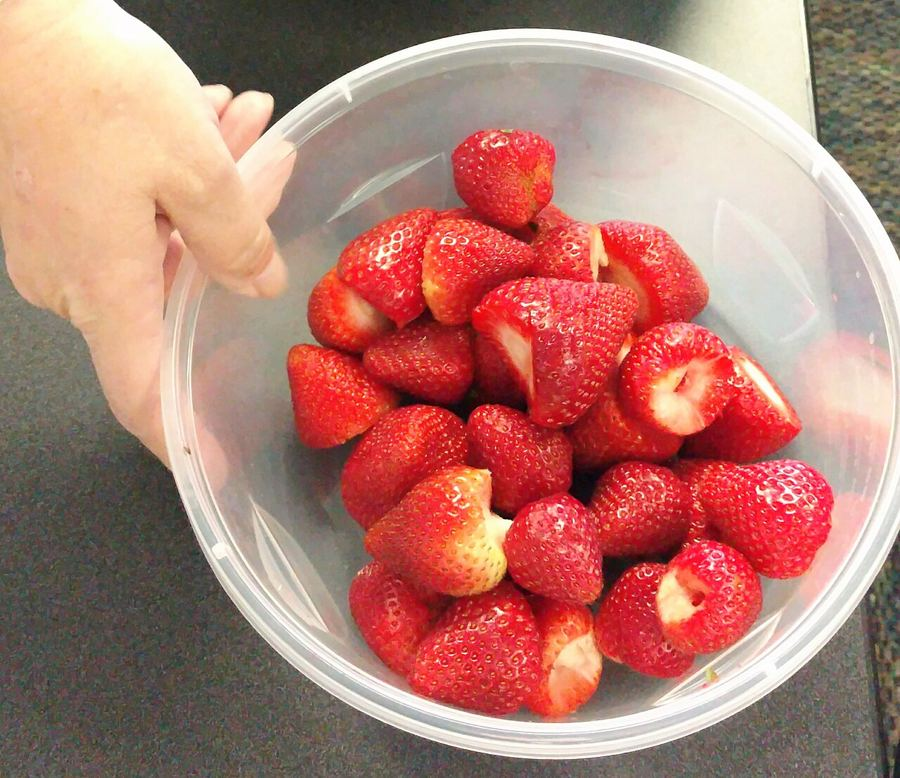
Fresa -
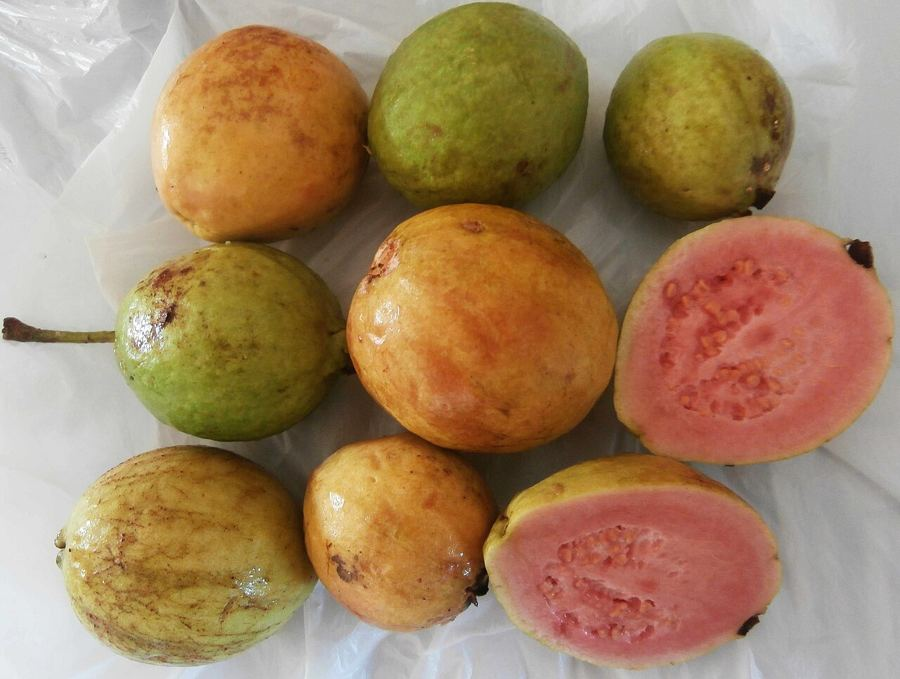
Guayaba -
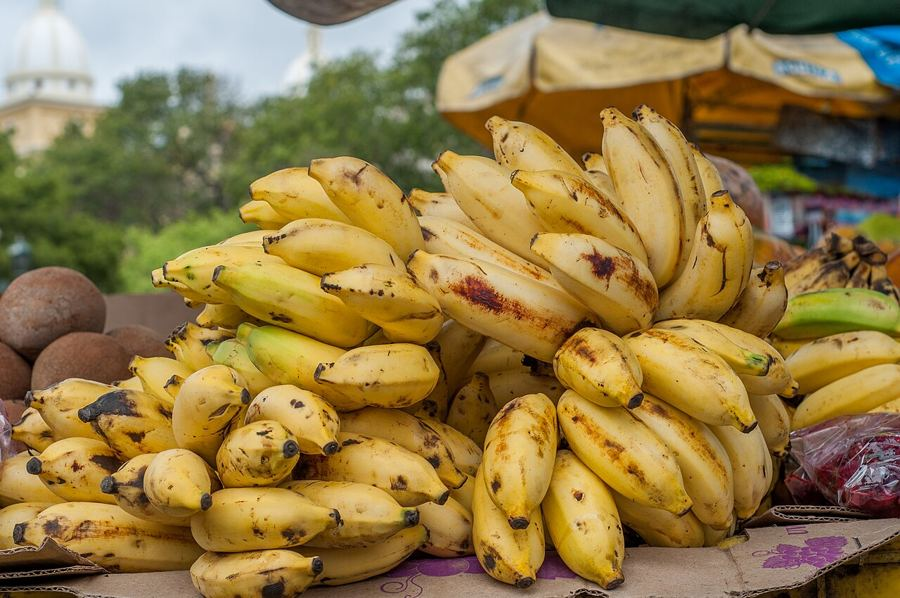
Plátano -
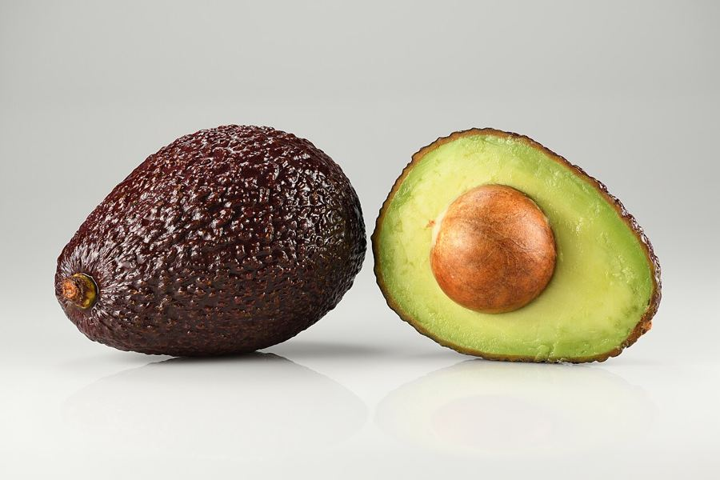
Aguacate -
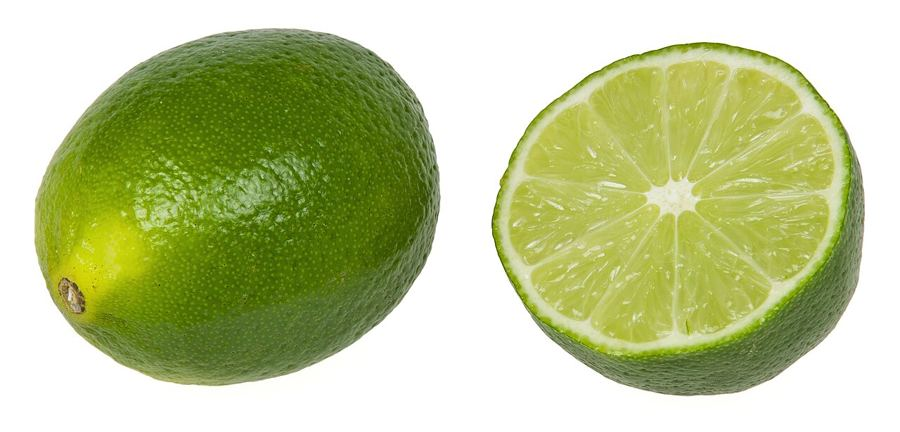
Limón
Fuentes
- Banco Mundial y SEMARNAT. (2017). Pérdidas y desperdicios de alimentos en México: una perspectiva económica, ambiental y social.
- Bancos de Alimentos de México. (s. f.). Desperdicio de alimentos en México. https://bamx.org.mx/
- CONEVAL. (2023). Medición multidimensional de la pobreza en México, 2022. https://www.coneval.org.mx/
- FAO. (2011). Global food losses and food waste: Extent, causes and prevention.